Foie gras de canard entier
Le goût franc du canard, un assaisonnement juste. Des foies IGP Sud-Ouest, cuits à cœur, sans conservateur.
dès 19,80 €Choisir
Foie gras, rillettes, pâtés, confits et plats cuisinés : tout est préparé à la main dans notre atelier de Casseneuil.
Le goût franc du canard, un assaisonnement juste. Des foies IGP Sud-Ouest, cuits à cœur, sans conservateur.

Toute la qualité du foie gras Quillot dans un mi-cuit de canard IGP Sud-Ouest.

Idéal pour l’apéritif : un bloc de foie gras de canard onctueux et harmonieux.

Une conserve rare, fortement truffée : foie gras de canard entier et 10 % de truffe noire du Périgord. Bocal de 180 g.

Un morceau de foie gras de canard entier IGP Sud-Ouest (50 %) enrobé d’une farce de porc cuisinée à l’ancienne.
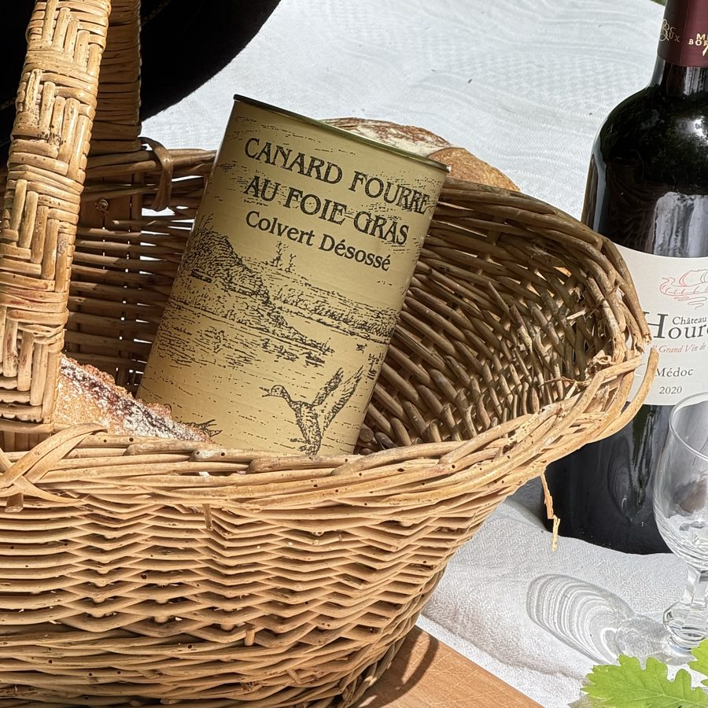
Le canard colvert désossé, fourré au foie gras : un produit rare et emblématique de la maison.
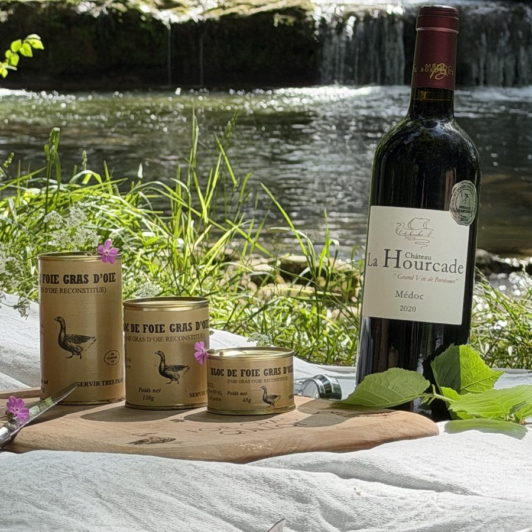
Idéal pour l’apéritif : un bloc de foie gras d’oie lisse et harmonieux.

À servir avant de passer à table, de préférence bien froide. 50 % de foie gras de canard.
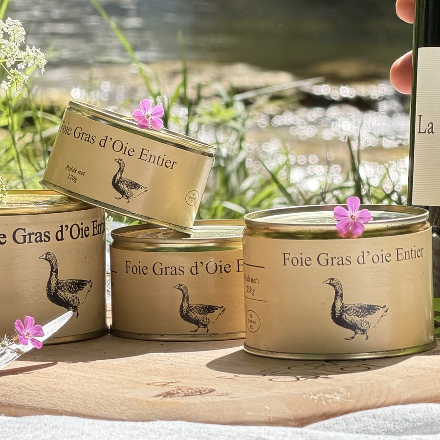
Le goût unique de l’oie, assaisonné juste ce qu’il faut pour ne pas l’altérer.

Faites à la main, à l’ancienne, avec la seule viande maigre de canard : légères, sans porc. À déguster à température ambiante.

La recette à l’origine de l’entreprise, transmise par la grand-mère de Daniel. Légère, faite à la main.

Uniquement de la viande de canard, cuisinée traditionnellement. À l’apéritif, ou en farce pour tomates et pommes de terre.
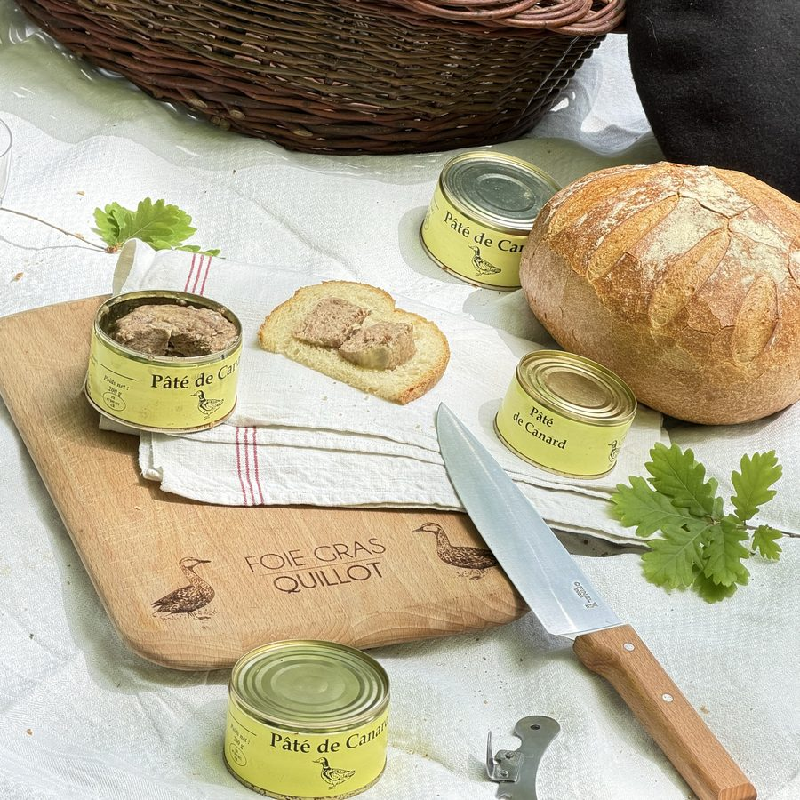
Notre pâté de canard, idéal pour une entrée ou une collation.
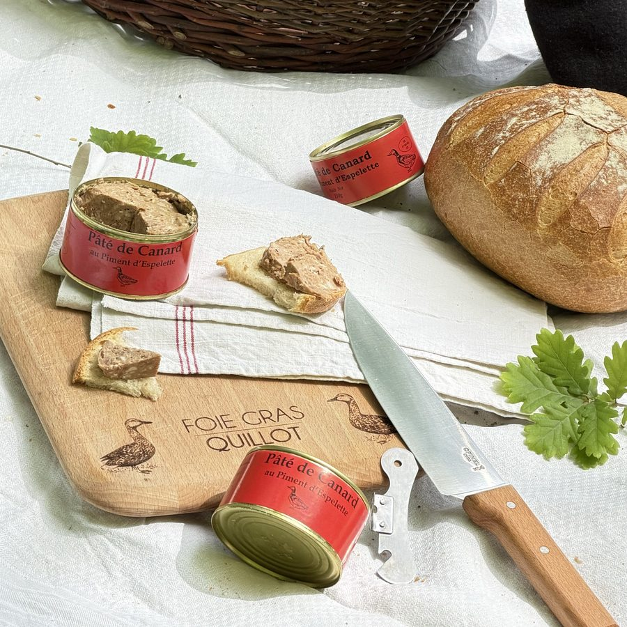
Le goût harmonieux du pâté de canard, avec une fine touche de piment qui se révèle en fin de bouche.

Sanglier sauvage (50 %), ail, échalote et porto.
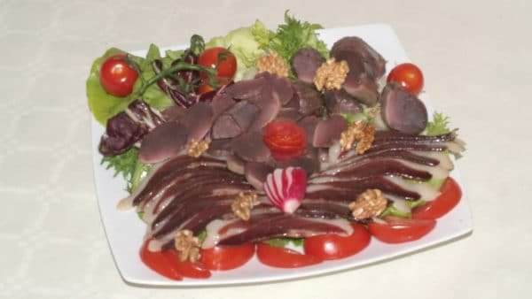
Magret de canard séché et fumé, prétranché ou en pièce entière.
Magret de canard séché et assaisonné, prétranché. Sachet de 90 g.
Magret de canard séché, prétranché. Sachet de 60 g.

Un incontournable de nos recettes de canard. Moelleux, fibreux : il fait des heureux.
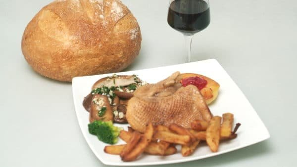
100 % viande d’oie IGP Sud-Ouest. Plus goûteux que le confit de canard, grâce à ses fibres plus longues.

Idéals en entrée, ou réchauffés et glissés dans une salade.
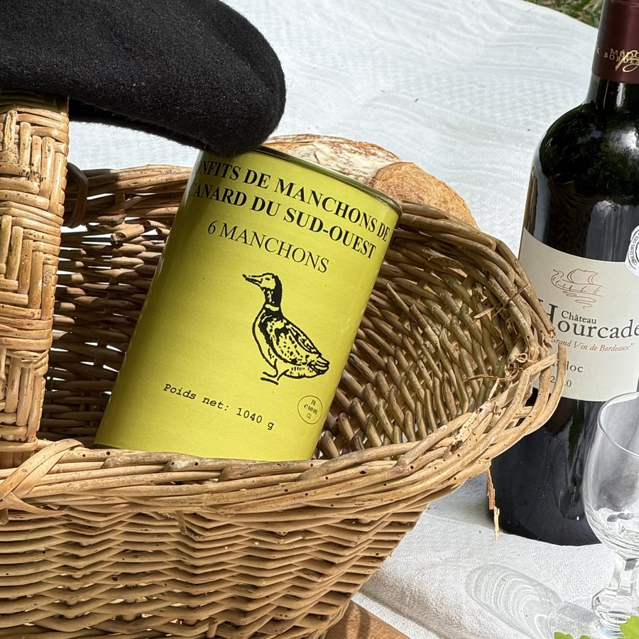
L’une de nos recettes de canard les plus faciles à cuisiner. Moelleux et fibreux.

Haricots tarbais Label Rouge, magret d’oie confit, fond de sauce maison. Se réchauffe en casserole, couvercle posé. Idéal pour 2 personnes.
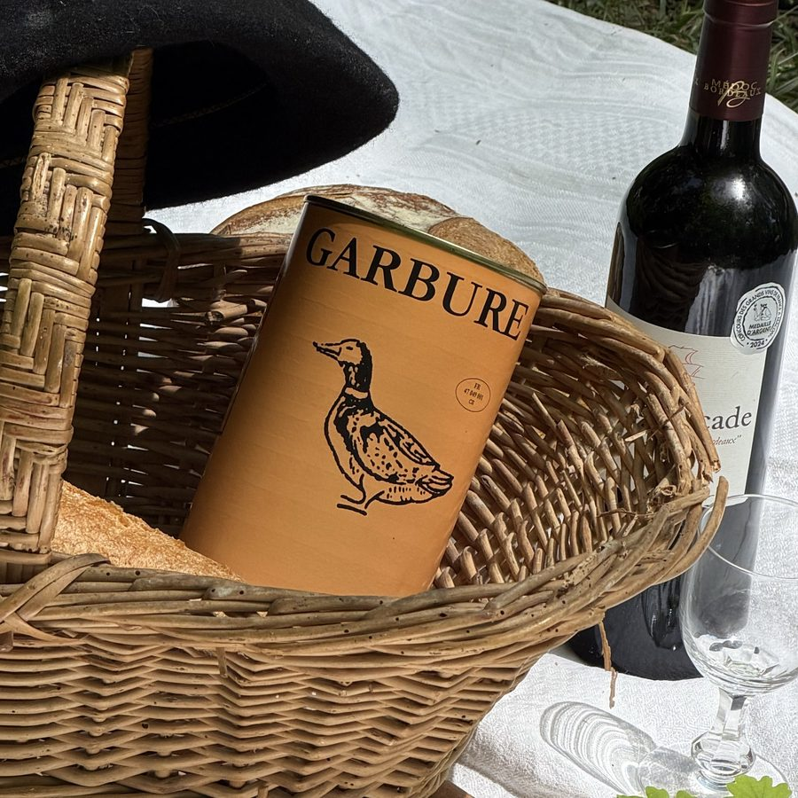
Notre garbure et ses 9 légumes frais.
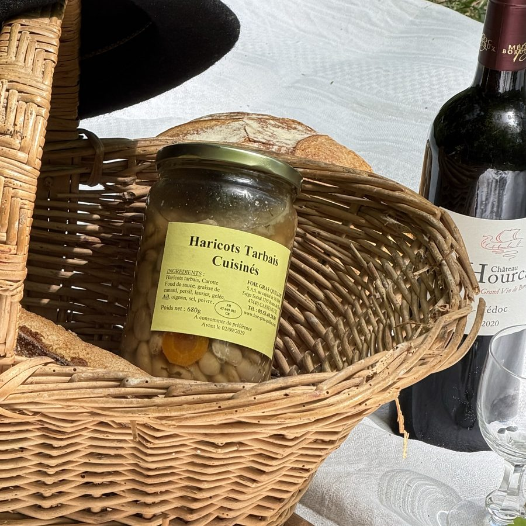
Pour accompagner vos plats : des haricots tarbais cuisinés à l’ancienne.
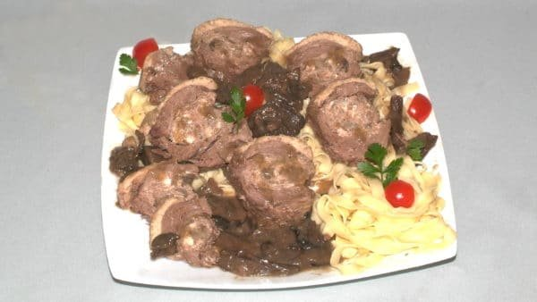
Un plat chaud pour 2-3 personnes, parfait pour régaler vos invités.
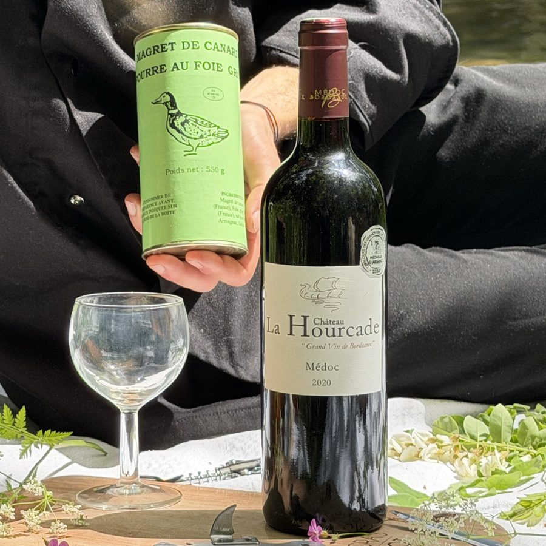
Se mange aussi bien froid que chaud.
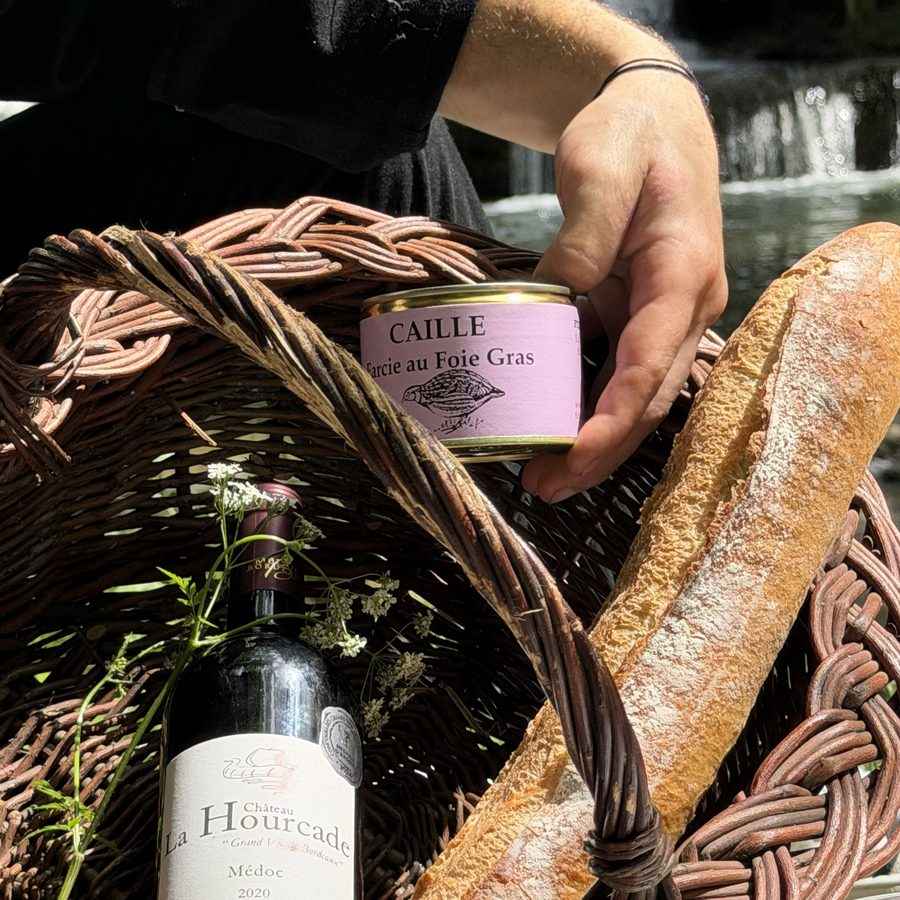
Pour une belle entrée, laissez-vous séduire par la caille farcie au foie gras.
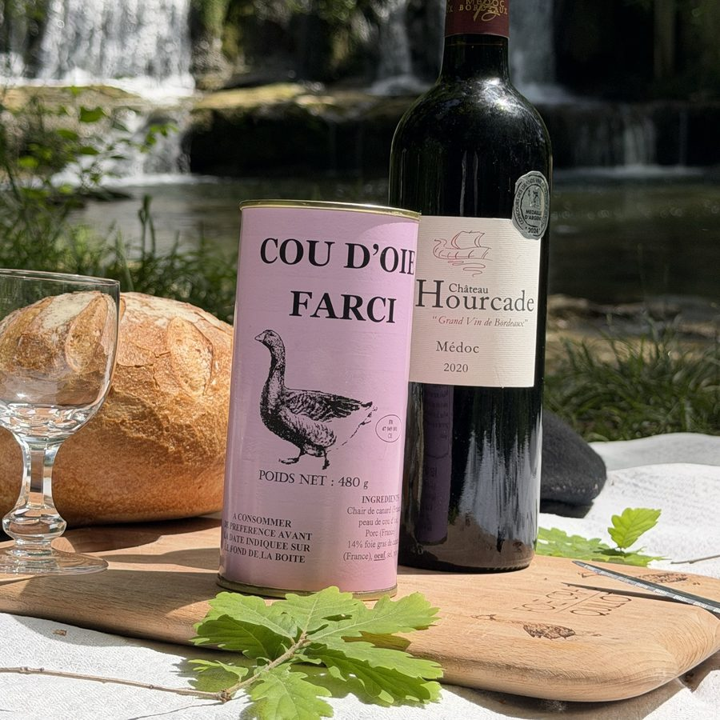
Se déguste froid comme chaud, selon l’envie.
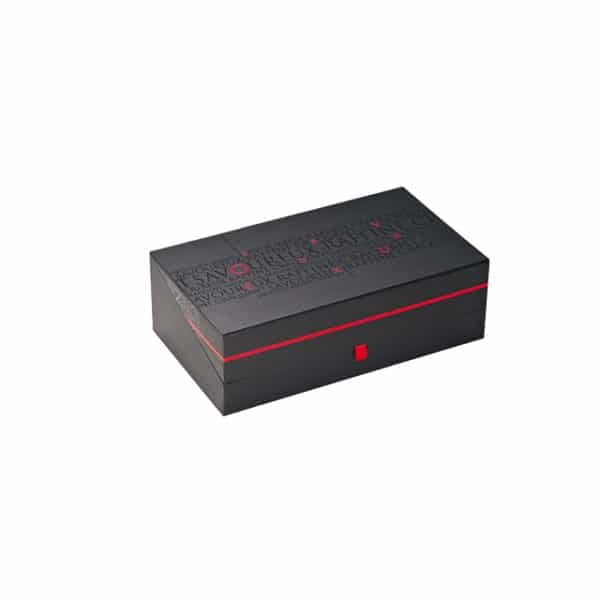
Offrez de bons produits sans vous tromper : la personne reçoit la carte par e-mail, avec un code à utiliser sur le site.
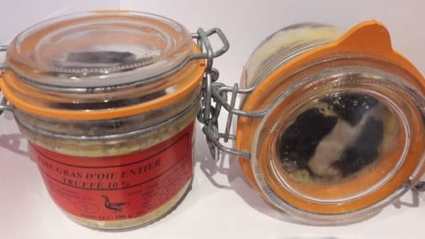
ÉpuiséFoie gras d’oie entier et 10 % de truffe noire du Périgord (Tuber melanosporum). Bocal de 180 g.
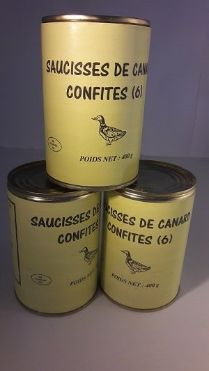
ÉpuiséDes saucisses 100 % viande de canard, confites.
Morceaux de truffes noires du Périgord, première ébullition.
Truffes noires du Périgord brossées, 1er choix, première ébullition.
 Épuisé
ÉpuiséUn bocal de foie gras de canard entier 190 g, un bloc de foie gras 65 g, un pâté de canard au piment d’Espelette 130 g et une bouteille de Côtes de Bergerac moelleux 37,5 cl.
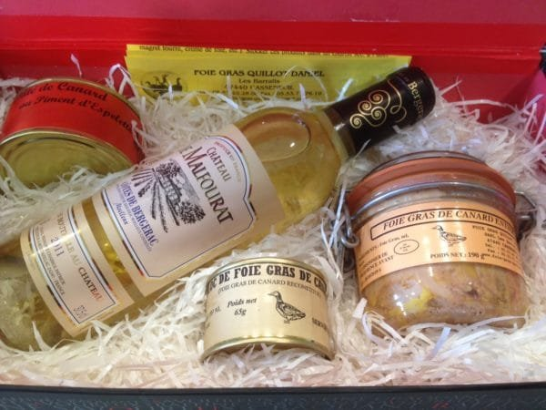
ÉpuiséSix coffrets garnis (foie gras, bloc, pâté, Côtes de Bergerac moelleux). Offre réservée à la France métropolitaine.
 Épuisé
ÉpuiséSix coffrets noirs à ruban rouge, même garniture. Offre réservée à la France métropolitaine.
Tous les produits que nous proposons sont faits maison : nous pouvons ainsi vous garantir une excellente qualité.
Frais fixes de 15 € pour la livraison en France, offerte dès 400 €. Tous les prix sont affichés TTC.
 Besoin d’idées ?
Besoin d’idées ?